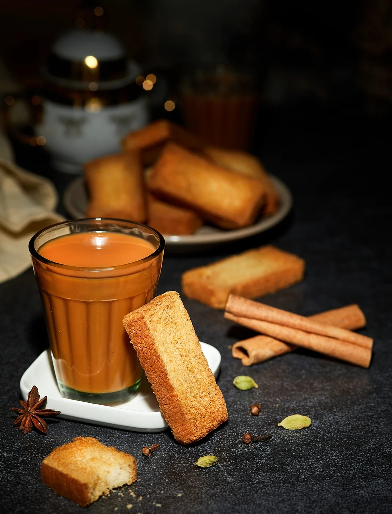

Tea

Description
Tea is a drink that is widely made in Asia and many
other parts of world. Indian tea has it's own flaour
and taste.
It is easy to make with some basic ingredients
and tastes heavnly specially in winter or rainy
seasons.
Ingredients
- 2 cups of milk
- 1 tablespoon of tea leaves
- 1.5 tablespoon of sugar
- Tea strainer
Steps
- Put 2 cups of milk and 1/4th cup of water in a steel
pot on medium flame.
- After 2 mins, add 1 tablespoon tea leaves and 1.5
tablespoon of sugar to it.
- Let it simmer and come to
a boil meanwhile, take a small piece of ginger, half
your thumb size, and crush it finely.
- Add the crushed giner to the pot after the
first boil. We wait till the first boil
to avoid curdling of milk because of ginger.
- Let it boil now on high flame.
- Keep stirring
every minute so that it doesn't overflows.
- Once the color of tea is a shade darker, taste
1 drop to check if anything needs to be adjusted.
- Strain the tea in 2 cups using a tea strainer.